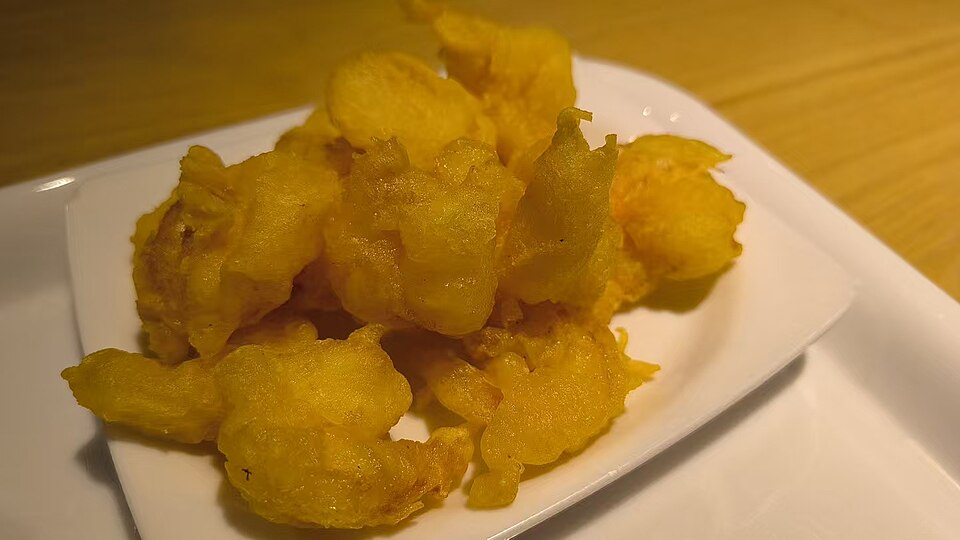

Frutos do mar · Camarões e frutos
Ju Har Kow (camarão empanado)

Ingredientes
- ½ kg de camarão cru limpo
- 1 colher (chá) de glutamato monossódico
- 2 colheres (chá) de suco de limão
- Massa: 2 ovos, 4 colheres (sopa) de farinha, ½ colher (chá) de sal, 1 pitada de pimenta
- Molho: 1 colher (sopa) de shoyu, 1 pitada de gengibre em pó, 2 colheres (sopa) de catchup
- Óleo para fritar
Modo de preparo
- Tempere o camarão com glutamato e limão. Bata a massa, empane e frite ~5 minutos até dourar.
- Misture o molho e sirva à parte.
Observação
Receita chinesa (A Cozinha Brasileira). Glutamato pode ser omitido se preferir.